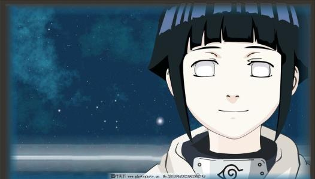
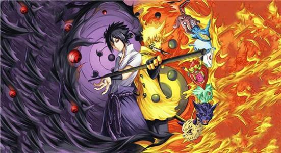

漩涡鸣人 日本漫画《火影忍者》及其衍生作品中的主角。火之国木叶隐村的忍者，四代目火影波风水门和漩涡玖辛奈之子，六道仙人次子阿修罗转世。刚出生时父母为保护村子而牺牲，并将强大的尾兽“九尾”封印于鸣人体内。
雏田 火之国木叶隐村的忍者，木叶名门日向一族宗家的嫡长女，大筒木羽村的后代之一，拥有纯度极高的白眼，被舍人和大筒木一族的亡魂们称为“白眼的公主”。
 宇智波鼬 火之国木叶隐村宇智波一族的成员，宇智波佐助的哥哥。是宇智波一族的天才忍者，年幼时跟宇智波止水是挚友，实力强大，擅长使用幻术。为了保护村子免受战乱，被迫接受了灭族任务，留下了弟弟佐助并刺激他向自己复仇，之后加入晓组织做卧底。
宇智波鼬 火之国木叶隐村宇智波一族的成员，宇智波佐助的哥哥。是宇智波一族的天才忍者，年幼时跟宇智波止水是挚友，实力强大，擅长使用幻术。为了保护村子免受战乱，被迫接受了灭族任务，留下了弟弟佐助并刺激他向自己复仇，之后加入晓组织做卧底。